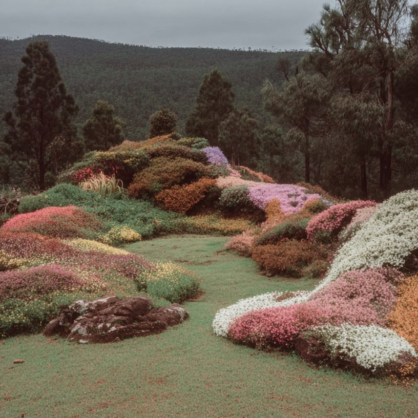

P10 / Laboratoire du vivant
Experimentations, tests et collaborations en ecologie appliquee.
Mode labo / musee
Documentation en cours: protocoles, comparatifs d'especes, densites, saisonnalites et observations de terrain.


| Protocole | Objectif | Etat | Note technique |
|---|---|---|---|
| R&D 01 / Prairies de semis | Resilience en sol contraint | En test | Placeholder a renseigner |
| R&D 02 / Jardin de pluie | Gestion hydrique et biodiversite | En test | Placeholder a renseigner |
| R&D 03 / Trame arbustive | Habitat faune et stratification | Documentation | Placeholder a renseigner |

Caption technique